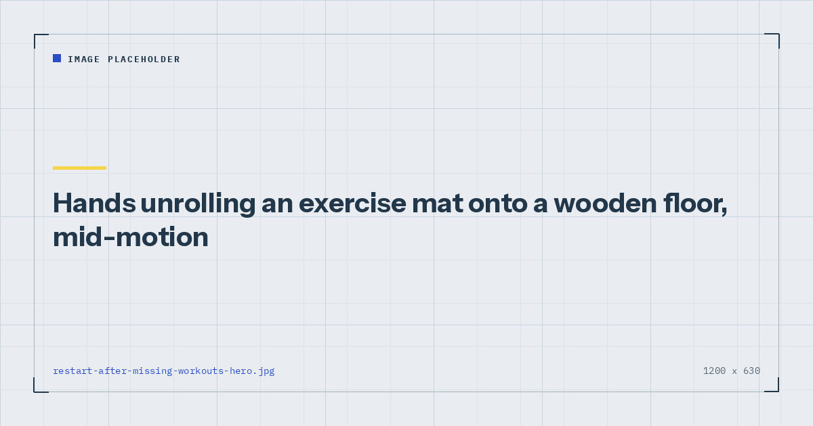

Habits & Recovery
How to Restart After Missing Two Weeks
You have lost less than you think, and the main risk on returning is not weakness. It is doing a session hard enough to make the second one not happen.

The instinct after a break is either to resume exactly where you left off, or to conclude the whole thing has been wasted and start again from nothing. Both are wrong, and the first is more damaging.
How much you actually lose
Less than people fear, and the losses are uneven.
Strength is retained reasonably well. Over two to four weeks of no training, most people lose relatively little maximal strength. A good deal of what feels like loss on returning is neural — the coordination of the movement rather than the muscle's capacity — and it comes back within a session or two.
Muscle mass declines more slowly than strength perception suggests. Visible change over a fortnight is minimal.
Cardiovascular fitness declines faster than strength, which is why a return to conditioning work often feels worse than a return to lifting.
Regaining is faster than gaining. Returning to a previous level takes considerably less time than reaching it did in the first place. This is well observed even if the mechanisms are debated, and it is the most reassuring fact in this article.
The practical summary: after two weeks you are close to where you were. After two months you have lost real ground and will regain it quickly.
The real risk on returning
Not injury, and not weakness. It is doing a first session hard enough that the second does not happen.
The pattern is reliable. You come back motivated, resume at your previous difficulty and volume, and because your body has partly de-adapted you produce substantial soreness — the repeated bout effect having worn off, so a familiar session behaves like a novel one.1 Three days of significant soreness later, the second session is unappealing, and the restart has failed.
The first session back should feel too easy. That is not caution for its own sake; it is the design constraint that makes the second session happen.
Restarting after two weeks
The most common gap and the easiest to handle.
Week one back: repeat the last week you completed, at about two-thirds the volume. Three sets becomes two. Stop every set three or four repetitions short of failure. Keep the same exercises and the same variations.
Week two back: resume normal volume at the same difficulty.
Week three: continue progressing as though the break had not happened.
Two weeks costs you roughly one week. That is the whole adjustment.
After a month
Drop one stage on every progression and reduce volume by about a third for the first week. If you were doing floor push-ups, do them on a step. If you were on Bulgarian split squats, do reverse lunges.
Build back over two to three weeks: week one at reduced difficulty and volume, week two at previous difficulty and reduced volume, week three back to normal.
Expect the first two sessions to feel disproportionately hard relative to how much you have actually lost. That gap is largely neural and it closes quickly.
After three months or more
Treat it as a fresh start with a large head start.
Run the 4-week beginner plan from week one, using whatever difficulty level is genuinely appropriate now rather than what you were doing before. You will move through it considerably faster than a true beginner — often completing it in two or three weeks — but running it properly gives you a structure and a set of numbers to build from.
The temptation to skip straight back to your old programme is strong and worth resisting. Connective tissue adapts more slowly than muscle, and it will have de-adapted over three months even where your strength has not entirely.
The first session back should feel too easy. That is not caution — it is what makes the second session happen.
Coming back from illness
Returning to training after illness is not the same as returning after a busy period. If you have had a fever, a chest infection, COVID-19, or any illness involving the heart, speak to your doctor before resuming and return gradually. Myocarditis following viral illness is uncommon but real, and exercising through it is the specific scenario in which it becomes dangerous.
General guidance often distinguishes symptoms above the neck, where gentle activity is usually reasonable, from fever or chest symptoms, where rest is appropriate. When in doubt, wait, and seek advice rather than pushing on.
After illness specifically, return at half your previous volume and build over two to three weeks even if you feel fine. Fatigue that arrives disproportionately during a session is a reason to stop that session.
Working out why it stopped
The part people skip, and the part that determines whether this happens again.
A break caused by a holiday or a genuinely exceptional fortnight needs no analysis. A break that happened because the routine was quietly unsustainable will repeat unless something changes.
Three questions worth asking honestly:
Was the plan too ambitious? If you were attempting five sessions and completing three, reduce to three. Two sessions a week still meets the adult recommendation for muscle-strengthening activity,2 and a plan you complete is worth more than one you fail.
Was there too much friction? Mat in a cupboard, space needing clearing, no written session. Each costs a few seconds and together they cost sessions — see setting up a home gym corner.
Was there a cue? If training was scheduled by time rather than attached to something that already happens, the first disrupted week removed it entirely. Habit research suggests automaticity takes a median of around 66 days to develop,3 so a routine interrupted before then had not yet become self-sustaining — see habit stacking for exercise.
If the same routine has now ended twice at the same point, the routine is the variable rather than your discipline. The pattern behind that is in beating the six-week drop-off.
Where to go next
For a structure to restart into, use the 4-week beginner plan or the three-day split. For preventing the next gap, see how to actually stick to a home workout habit.
Frequently asked questions
How much fitness do you lose in two weeks off?
Less than most people fear. Maximal strength is retained reasonably well over two to four weeks, and much of what feels like loss on returning is neural coordination that comes back within a session or two. Cardiovascular fitness declines faster than strength.
How should I restart after two weeks off?
Repeat the last week you completed at about two-thirds the volume, stopping every set three or four repetitions short of failure. Resume normal volume in week two. Two weeks off costs you roughly one week.
What is the biggest mistake when returning to training?
Resuming at your previous difficulty and volume. Because the repeated bout effect has worn off, a familiar session behaves like a novel one and produces substantial soreness — which makes the second session unappealing and the restart fails.
How do I come back after three months off?
Treat it as a fresh start with a head start. Run a beginner plan from week one at whatever difficulty is genuinely appropriate now. You will move through it faster than a true beginner, but connective tissue adapts more slowly than muscle and will have de-adapted.
Is it safe to train after being ill?
Return gradually and speak to your doctor first if you have had a fever, a chest infection, COVID-19, or any illness involving the heart. Myocarditis following viral illness is uncommon but real, and exercising through it is when it becomes dangerous.
Why do I keep stopping and restarting?
Usually because the plan was too ambitious, there was too much friction between deciding and starting, or training was scheduled by time rather than attached to a cue that already happens reliably. If the same routine has ended twice at the same point, the routine is the variable.
Sources and further reading
- Dupuy O, Douzi W, Theurot D, Bosquet L, Dugué B. “An Evidence-Based Approach for Choosing Post-exercise Recovery Techniques to Reduce Markers of Muscle Damage, Soreness, Fatigue, and Inflammation: A Systematic Review With Meta-Analysis.” Frontiers in Physiology, 2018;9:403. PubMed.
- World Health Organization. WHO Guidelines on Physical Activity and Sedentary Behaviour. 2020.
- Lally P, van Jaarsveld CHM, Potts HWW, Wardle J. “How are habits formed: Modelling habit formation in the real world.” European Journal of Social Psychology, 2010;40(6):998–1009. doi:10.1002/ejsp.674.
- NHS. Strength and Flex exercise plan.
Comments
Comments are not enabled yet. Add a hosted comment embed (Disqus, Commento, Giscus) inside this container when you are ready.